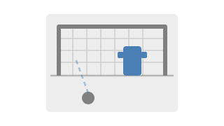
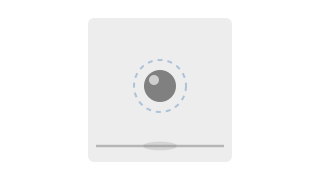
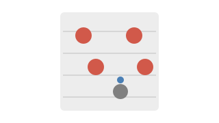
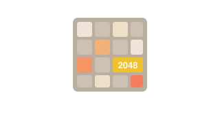
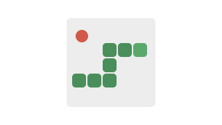
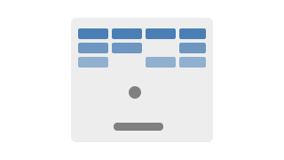

Matchday threads Talk every match through, from team news to full time. Each game gets its own matchday thread. Call the result before kick-off, suffer through the ninety together, then do the post-mortem. Premier League North London derby Arsenal vs Tottenham Emirates Stadium Arsenal win88% Draw8% Spurs win4% Vote 26 voters · Closed 23 Nov
As it happens Celebrate every goal in capital letters. Seconds after it hits the net, the whole thread loses its mind. Scenes. Arsenal 4–1 Tottenham Trossard 36′ · Eze 41′ 46′ 76′ EEZEEEEEEEEEE SThat run from Tross and the pass from Merino. Just class. AEZEDINHOOOOO ESBDHSJKSUFHDJSKSISHSHSH SEZECHUKWU!!! What a goal!! From the match thread, North London derby, 23 November 2025.
Player threads Starboy in the form of his life? Talk about it in his thread. Ode pulling the strings again? Talk about it in his thread. Timber the best right-back in the league? Talk about it in his thread. Every first-team player has his own thread: the essentials pinned up top, every worldie and every wobble underneath. Saka Ødegaard Timber SAKA7 Winger England Bukayo Saka Bukayo Ayoyinka Temidayo Saka · 5 September 2001, Ealing Hale End's finest. Cuts in on his left, terrorises full-backs and has carried the right wing for years. RW June 2030 7 ØDEGAARD8 Midfielder Norway Martin Ødegaard Martin Ødegaard · 17 December 1998, Drammen Came on loan from Real Madrid in 2021 and signed for good that summer. Captain since 2022, and still sees passes nobody else does. AM, CM June 2028 8 TIMBER12 Defender Netherlands Jurriën Timber Jurriën David Norman Timber · 17 June 2001, Utrecht Signed from Ajax in 2023 and lost nearly all of his first season to an ACL. Since then, a right-back who drifts inside like a sixth midfielder. RB, CB June 2028 12
Be the gaffer: pick the XI you'd send out. Type eleven names and your post turns into a pitch, in the formation of your choice.
Premier League Arsenal vs Tottenham Arsenal Draw Tottenham Amount (min 10) Place bet Fancy yourself as the forum's best tipster? Prove it in Bookie: back your calls with virtual coins and climb the league table. No real money involved.
Penalty Keepie Uppie Dribble 2048 Snake Breakout Bragging rights, settled every month in the Arcade. A dozen games, from Penalty to 2048, each with its own leaderboard.